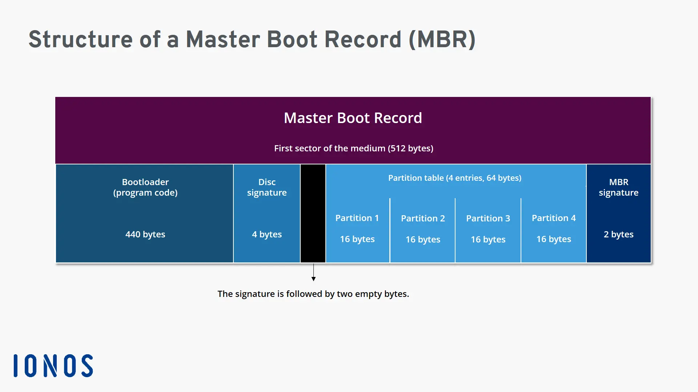
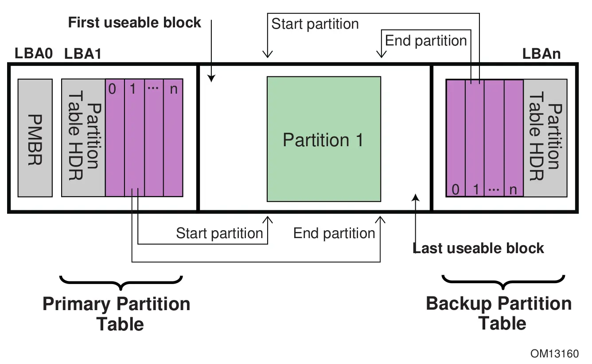
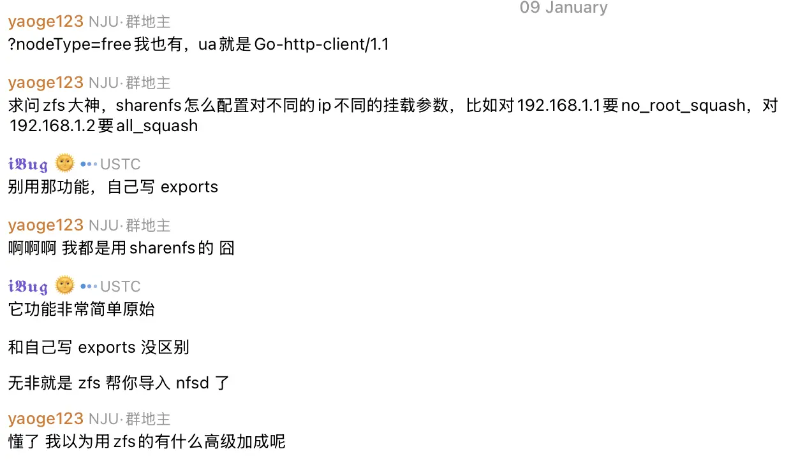

文件系统¶
Abstract
计算机系统中，除去计算，最重要的部分莫过于存储。本文介绍运维中常用的存储相关的知识和技能。对其背后的原理不会深入讨论，可以参考相关文献。
磁盘原理¶
本节解释文件系统下层的一些概念，包括分区、逻辑卷等。
磁盘结构¶
从 1986 年开始，磁盘的几何结构开始经历从 CHS（Cylinder-Head-Sector）到 LBA（Logical Block Addressing）的转变。曾几何时，磁盘的几何结构是由 CHS 三元组（柱面、磁头、扇区）描述的。但随着磁盘技术的发展，具体的物理结构逐渐被隐藏，转而采用逻辑上连续的 Block 来寻址。
分区表¶
磁盘可以分区，以便建立更多区域分别管理。对于操作系统来说，分区是逻辑上独立的设备。
磁盘上存储分区表以记录分区信息。操作系统在读取磁盘时先读取分区表，然后根据分区表的信息读取各个分区。分区表有两种格式：MBR 和 GPT。
MBR¶
主引导记录（Master Boot Record，MBR）包含磁盘分区信息，以及一段用于引导操作系统的代码。因此，在谈论分区表或引导程序时都可能提及 MBR。
MBR 出现较早。它由磁盘上第一个扇区的 512 字节组成。这样的限制导致 MBR 仅能管理 2TB 以下的磁盘，只支持 4 个分区。MBR 逐渐被 GPT 取代。

MBR (Master Boot Record) explained - IONOS CA
GPT¶
GUID 分区表（GUID Partition Table，GPT）是 UEFI 标准的一部分。GPT 采用 64 位的 LBA（Logical Block Addressing）来寻址，因此支持更大的磁盘。GPT 兼容 MBR：
- LBA 0 为 MBR
- 接下来是 GPT 头
- 磁盘末尾是备份的 GPT 头
GPT 分区表的每个表项为 128 字节，标准规定至少 16,384 字节用于表项数组，即至少支持 128 个分区。在扇区大小为 512 字节的情况下，GPT 分区表占用至少 32 个扇区，故第一个可用的 LBA 为 34。

GUID Partition Table information - Thomas-Krenn-Wiki-en
GPT 表项包含如下内容：
- 两种 GUID：分区类型 GUID 和唯一分区 GUID。分区类型 GUID 用于标识分区类型，唯一分区 GUID 用于标识分区。
- 分区的起始和结束 LBA。
- 分区属性：如只读、隐藏等。有些属性通用，有些属性对特定文件系统、操作系统有效。
- 分区名称。
要使用 UEFI，GPT 磁盘中至少需要一个 EFI 系统分区（EFI System Partition，ESP）。UEFI 可以识别它并读取器中的 FAT 文件系统，在其中寻找引导文件。
Note
与 Legacy + MBR 启动方式下每个系统需要具有一个独立的 /boot 分区不同，在 UEFI + GPT 启动方式下，一个磁盘上所有系统共享 ESP。
逻辑卷¶
目前我们没有使用该功能，略。
磁盘实践¶
fdisk¶
fdisk 是 util-linux 的一部分，用于磁盘分区。该命令后接一个磁盘设备文件进入交互模式：
$ sudo fdisk /dev/sda
Changes will remain in memory only, until you decide to write them.
Be careful before using the write command.
Command (m for help):
在交互模式下按照指引进行操作。操作会在内存中保存，直到使用 w 写入。
文件系统原理¶
ZFS¶
Quote
- ZFS 分層架構設計 - Farseerfc 的小窩：关于 ZFS 原理的全面的索引，给出了非常多的参考资料和视频链接。
- Oracle ZFS
- OpenZFS
- 使用情况：目前我们主要在存储池使用 ZFS。ZFS 适用于磁盘阵列和大容量存储，提供了强大的数据保护能力和高级管理功能。
- 历史：ZFS 由 Sun 公司开发，随着 OpenSolaris 开源。当 Oracle 收购 Sun 后，ZFS 转为闭源。ZFS 的开源分支从 OpenSolaris 派生而来，现由 OpenZFS 维护。
- 发展情况：ZFS 现有两种实现，一种是 OpenZFS（大多数人使用的），一种是向 Oracle 公司购买存储服务，这两种实现的大部分用法一致，但有一些细微不同（比如属性设置）。Oracle 维护的 ZFS 文档很适合入门，OpenZFS 的文档阅读难度较高。可以按照 Oracle 的文档来学习，但遇到不用的用法时应当查 OpenZFS 文档。
自行阅读相关文档，了解 zpool、dataset、scrub 和 snapshot 的概念。
- 查询
- 创建和删除
The recommended way is to choose something from /dev/disk/by-id/ Some of these may include a UUID and others, the device serial number and (for partitions) the partition number.
压缩和去重¶
TODO
快照¶
ZFS 中的快照是文件系统的只读副本。
要创建快照，使用 zfs snapshot 命令，参数为 ZFS 数据集名@快照名。使用 -r 选项可以递归创建快照。
列出快照和回滚操作：
可以通过 ZFS 数据集下的 .zfs/snapshot 目录访问快照：
Example
目前集群的家目录设置了每日快照。如果误删文件，可以到 storage 上进入 /home/.zfs/snapshot 目录找回。
ZFS 与 NFS¶
关于 sharenfs

镜像站联盟群里的讨论说不建议使用 sharenfs，功能比 exports 弱。
通常 ZFS 用如下命令设置 NFS 服务：
zfs get -r sharenfs
zfs set xattr=sa dnodesize=auto ocean/data
zfs set sharenfs="rw=172.25.0.0/16,no_root_squash,no_all_squash,nohide" ocean/data
showmount -e 127.0.0.1
- 第二行设置 ZFS 参数
xattr=sa和dnodesize=auto。前者将扩展属性存储在 inode 而不是隐藏的子文件夹中，避免多次 I/O 操作；后者根据文件系统中的元数据或扩展属性多少自动调整 dnode 大小，也能够减少 I/O 操作。设置这两个属性可以提高 ZFS 的 NFS 性能表现。 - 第三行设置 NFS 参数
no_root_squash、no_all_squash确保用户权限正确。
在新系统上初次设置 ZFS 的 sharenfs 时可能遇到错误：
大概率是缺少 NFS server 工具。参考 Unintuitive error message setting sharenfs=on · Issue #4534 · openzfs/zfs。
一些已知的问题
当客户端为 NFSv3 时，服务端需要设置 nohide，否则子 dataset 不会显示。v4 不需要显式设置，不知道是 feature 还是 bug。
NFS¶
NFS 发展情况¶
Quote
- Advances in NFS – NFSv4.1 and pNFS - SNIA：介绍了 NFSv4、v4.1、v4.2 的新特性。
- (2017)Linux Support of NFS v4.1 and v4.2 - Linux Foundation：介绍了 Linux 对 NFSv4.1 和 v4.2 的支持情况。
NFSv4 相比 NFSv3 有显著的不同，NFSv4.1 与 NFSv4 又有显著的不同。如 NFSv4.1 摘要中所述，两者被认为是各自独立的协议：
NFS version 4 minor version 1 has no dependencies on NFS version 4 minor version 0, and it is considered a separate protocol.
也正是因为上述原因，NFSv4.1 是一份完整的规范，而不是 NFSv4 的补充。阅读 NFSv4.1 时不需要阅读 NFSv4。而 NFSv4.2 则是 NFSv4.1 的补充，阅读时需要参考 NFSv4.1。
最新的标准总是会被迅速实现和普及，如果想学习标准也最好从最新版本开始。
对于 Linux，linux-nfs 负责 NFS 的开发和维护。NFSv4.2 已经在 Linux 得到支持。
NFSv4¶
Quote
NFS v4 的 RFC 在 2003 年发布了一版（RFC 3530），在 2015 年又发布了一版（RFC 7530），这两版的实现还有一些不同，可能需要注意。比如：nfs4_setfacl 就仍然采用 RFC 3530。
Windows Server 上的 NFS¶
Windows Server 目前仅能作为 NFS v4.1 服务器，客户端只支持到 NFS v3。
NFSv4 over RDMA¶
NFS over IPoIB / NFS over RDMA - CMU 对 NFS over RDMA 做了很好的对比研究。目前，我们在使用 NFS over RDMA 时遇到了一些问题，还没有解决：
- 我们的集群从 NFS Root 启动，通过 NFSv4 over Ethernet 挂载了根文件系统。
- 启动后，试图使用 NFSv4 over RDMA 从相同服务器上挂载其他文件系统，但发现流量并没有走 RDMA，全走以太网了。
下面是我们的一些尝试和猜测：
- 可能是 NFSv4 Session 机制的原因。目前没有弄清楚具体机制，但 NFSv4 Session 是能提供多路复用的，应该会更快才对。
- 使用 NFSv3 可以挂载 RDMA。但是我们看到 NFSv3 走的是 IPoIB，RDMA 表现会比 IPoIB 好一些。而且 NFSv4 带来了很多重要改变，我们更偏向于使用 NFSv4。
我们需要对 Linux NFS 的实现细节有更深入的了解，尝试解决通过多个路径从同一个 NFS 服务器挂载文件系统的问题。
此外，或许可以考虑 FlexBoot，直接在启动时将根文件系统挂载到 IB 上。但是 FlexBoot 毕竟是 NVIDIA 闭源标准，必须有 IB 卡才能使用。因此我们放弃了考虑该种办法。
https://www.kernel.org/doc/Documentation/filesystems/nfs/nfs-rdma.txt
NFS 问题记录¶
报错例：
$ rm -rf oscar-corpus
rm: cannot remove 'oscar-corpus/oscar/train/.nfs000000000000395800000018': Device or resource busy
原因：Files with a naming convention like .nfsXXXX are created by NFS clients when a file that is currently opened on a client is deleted by that client. The client renames the file to .nfsXXXX which discourages other clients/processes from utilizing the file. The client that does the rename should delete the file once it's been closed by the client process. This delete might not occur if the client is dsiconnected, rebooted, or the process that would issue the delete is terminated.
- NFS 丢失文件扩展属性
报错例：
$ ping baidu.com
ping: socktype: SOCK_RAW
ping: socket: Operation not permitted
ping: => missing cap_net_raw+p capability or setuid?
$ sudo getcap /usr/bin/ping
原因：
- NFS 4.2 开始支持 xattr（参考 NFSv4.2 Extended attributes）。
- Linux 5.9 起已经实现了 NFS Server 的 xattr 支持（参考 User Xattr Support Finally Landing For NFS In Linux 5.9 - Phoronix）。
OverlayFS¶
Quote
- 上下层同名目录合并
- 上层文件覆盖下层
- 上层可写
- 下层只读，写时复制到上层
OverlayFS 运行时，不应当对下层文件系统进行操作，否则会导致不可预知的结果。因此，在当前 OverlayNFSRoot 的集群上，如果需要对根文件系统进行操作，应当先关闭所有启动到 OverlayFS 的节点。
文件系统实践¶
fsck¶
fsck 是 util-linux 的一部分，用于检查和修复文件系统。